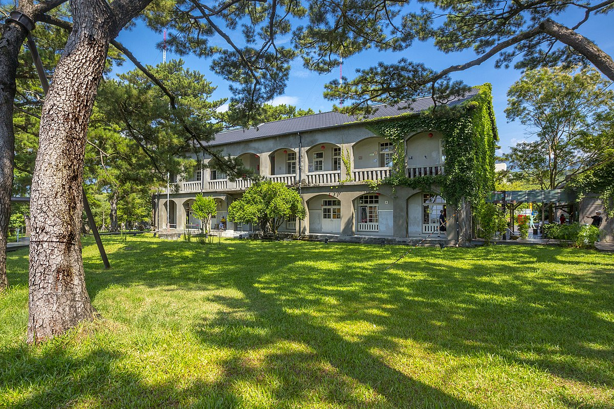

探索花蓮
花蓮是台灣東部的一個美麗城市，擁有壯麗的自然景觀和豐富的文化遺產。以下是花蓮著名的景點:

太魯閣國家公園
太魯閣國家公園座落於花蓮、臺中及南投三縣市，是臺灣第四座成立的國家公園，前身為日治時期成立之次高太魯閣國立公園（1937-1945）。 其範圍以立霧溪峽谷、東西橫貫公路沿線及其外圍山區為主，包括合歡群峰、奇萊連峰、南湖中央尖山連峰、清水斷崖、立霧溪流域及三棧溪流域等，全區面積九萬二千公頃。
七星潭
七星潭富有詩意的名稱，據說是位於花蓮師範學院和花蓮機場一帶，早年有零星湖泊散佈，後來因建設需要而填實。 現在一般稱七星潭，是指美崙工業區和花蓮機場以北的地區，有斷層形成的海峽與優美的弧形海灣，具有豐富的自然人文景觀。 在七星潭，可以遠眺清水斷崖，夜間還可以欣賞新城和崇德地區的燈火，區內更有許多景點，提供休憩和知性之旅。
花蓮海洋公園
遠雄海洋公園位於花蓮縣壽豐鄉鹽寮村，距離花蓮市區約10公里，交通相當便捷，是台灣相當著名的海洋公園，也是全台第一座國際級海洋主題樂園，佔地約50公頃相當廣大，海洋公園共規劃八大主題區、四大主題表演，除了擁有八大主題區的娛樂設施外，主題表演則包含精采的海獅秀、海豚秀等。

松園別館
松園別館為花蓮縣僅存最完整的日據時代軍事建築物，基地面積1.38公頃，內有日劇時期之歷史建物共四棟判斷約建於昭和18年（西元1943年），主體建築為折衷主義形式的磚木，RC混合二層洋樓建築，一、二層樓皆設拱廊，日本瓦頂。